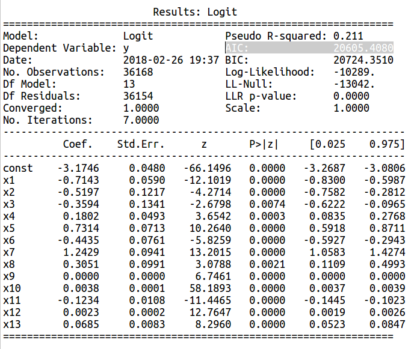

We create a model for predict if a client will subscribe a product of the bank the Term Deposit with a Direct Marketing offert.
The same project will create with Gretl, Python and Deep Learning in Python.
We use for create the model the Backward elimination method and the CAP for evaluate it.
We use the regression but is not possible use the Multiple Linear Regression because the result of the function is a discrete variable(0, 1) then we use the Logistic Regression.
The Logistic Regression is a regression model to determine the probability of a dependent variable that is categorical(Yes or No) or binary how in our case(0,1).
This is the formula : y(probability - dependent variable) = σ(β 0 + β 1x 1 + β 2x 2 + ... + β nx n)
dove σ è la Sigmoid Function (image below), β 0 .... β n are the coefficients and x 1 .. x n are the independent variables.
The Sigmoid Function is function that return us result 0 or 1 according a discriminating value that is generally 0.5 how in the image below :The same project will create with Gretl, Python and Deep Learning in Python.
We use for create the model the Backward elimination method and the CAP for evaluate it.
We use the regression but is not possible use the Multiple Linear Regression because the result of the function is a discrete variable(0, 1) then we use the Logistic Regression.
The Logistic Regression is a regression model to determine the probability of a dependent variable that is categorical(Yes or No) or binary how in our case(0,1).
This is the formula : y(probability - dependent variable) = σ(β 0 + β 1x 1 + β 2x 2 + ... + β nx n)
dove σ è la Sigmoid Function (image below), β 0 .... β n are the coefficients and x 1 .. x n are the independent variables.
 The Sigmoid Function formula :
The Sigmoid Function formula :

To create a model minimizing the cost function (a cost function is a measure of how wrong the model is in terms of its ability to estimate the relationship between x and y) to find the best coefficients with Gradient Descent(Gradient descent is an efficient optimization algorithm that attempts to find a minimum of a function)
The data is related with direct marketing campaigns of a Portuguese banking institution.
The marketing campaigns were based on phone calls. Often, more than one contact to the same client was required, in order to access if the product (bank term deposit) would be (or not) subscribed.
The bank dataset with all examples from May 2008 to November 2010 has 45211 instances.
The classification goal is to predict if the client will subscribe a product of the bank the term deposit (variable y).
The dataset has 16 + output attribute our dependent variable.
The input attribute are our independent variables:
# bank client data:
1 - age (numeric)
2 - job : type of job (categorical: "admin.","unknown","unemployed","management","housemaid","entrepreneur","student", "blue-collar","self-employed","retired","technician","services")
3 - marital : marital status (categorical: "married","divorced","single"; note: "divorced" means divorced or widowed)
4 - education (categorical: "unknown","secondary","primary","tertiary")
5 - default: has credit in default? (binary: "yes","no")
6 - balance: average yearly balance, in euros (numeric)
7 - housing: has housing loan? (binary: "yes","no")
8 - loan: has personal loan? (binary: "yes","no") # related with the last contact of the current campaign:
9 - contact: contact communication type (categorical: "unknown","telephone","cellular")
10 - day: last contact day of the month (numeric)
11 - month: last contact month of year (categorical: "jan", "feb", "mar", ..., "nov", "dec")
12 - duration: last contact duration, in seconds (numeric)
13 - campaign: number of contacts performed during this campaign and for this client (numeric, includes last contact)
14 - pdays: number of days that passed by after the client was last contacted from a previous campaign (numeric, -1 means client was not previously contacted)
15 - previous: number of contacts performed before this campaign and for this client (numeric)
16 - poutcome: outcome of the previous marketing campaign (categorical: "unknown","other","failure","success") Output variable (desired target):
17 - y - has the client subscribed a term deposit? (binary: "yes","no")
For the project we use the following file granted from UCI Machine Learning Repository :
[Moro et al., 2011] S. Moro, R. Laureano and P. Cortez. Using Data Mining for Bank Direct Marketing: An Application of the CRISP-DM Methodology. In P. Novais et al. (Eds.), Proceedings of the European Simulation and Modelling Conference - ESM'2011, pp. 117-121, Guimarães, Portugal, October, 2011. EUROSIS. Available at: [pdf] http://hdl.handle.net/1822/14838 [bib] http://www3.dsi.uminho.pt/pcortez/bib/2011-esm-1.txt
CREATE THE MODEL WITH GRETL
Here you can see some records of the file bank-full.csv with the data memorized from the bank.
We split the file bank-full.csv into 2 file Bank_trainingset.csv (80% of records) and Bank_testset.csv(20% of the records) in random mode. Open the data file Bank_trainingset.csv with Gretl and then dummify the categorical variables(transform it in numerical
variables).
This is the schema for the BACKWARD ELIMINATION method for elimate the predictor in Gretl and create a model
Now always with Gretl start the creation of our model with the method of the BACKWARD ELIMINATION. First of all select the Model option on the Menubar and select Limited depended variable then Logit and Binary.
Select the dependent variable and all the possible independent variables, check the option view the p-value. Show the value of premiere model. See the variable with the greater p-value > SL = 0.5 and recreates the model without this variable. See the model2 and model3 image below.
Select the dependent variable and all the possible independent variables, check the option view the p-value. Show the value of premiere model. See the variable with the greater p-value > SL = 0.5 and recreates the model without this variable. See the model2 and model3 image below.
The model 7 is th model with all the p-value
< SL.
Now will proceded for verify if the model is good.
Now will proceded for verify if the model is good.
For evaluate the correlation and the importance of coefficient we calculate from our model the ODDS RATIO in Gretl.
The coefficient with the higher odds ratio is the most influente.
If odds ratio is lower 1 then the coefficient is negative.
The coefficient with the higher odds ratio is the most influente.
If odds ratio is lower 1 then the coefficient is negative.
When all the variables have the p-value
< SL check the multicollinearity of the model to verify not have the collinearity beetween the variables.
If the VIF(Variance Inflation Factors) of a variable is > 10 recreates the model without this variable. In this example the model 7 is the model created with the training data. For create a best model we can modify the variables or create other parameter with the interaction of two or more variables.
Another parameter to evaluate the model is the AIKAKE Criterion or AIC.
The model with lower AIC is the better.
If the VIF(Variance Inflation Factors) of a variable is > 10 recreates the model without this variable. In this example the model 7 is the model created with the training data. For create a best model we can modify the variables or create other parameter with the interaction of two or more variables.
Another parameter to evaluate the model is the AIKAKE Criterion or AIC.
The model with lower AIC is the better.

Now for evaluate the model we create the same model with the Test set data to compare the result. The Accuracy for the training set is 89.1% while for test set is 89.0%. The model is good but we can get better.
EVALUATE THE MODEL WITH CAP - CUMULATIVE ACCURACY PROFILE
A method for evaluate the quality of model is CAP Cumulative Accuracy Profile.
With the data take from Gretl and insert into a Spreadsheet we drawing a line graph.
The green column is the data of the x axes that represents the % of client, the blue column is the random select of total and the red column is the % of client that accept the bank offert into our model.
With the data take from Gretl and insert into a Spreadsheet we drawing a line graph.
The green column is the data of the x axes that represents the % of client, the blue column is the random select of total and the red column is the % of client that accept the bank offert into our model.

Here the graph with the data of the model. For evaluate the model see the value of y axes for the 50% of the x axes.
A model is good if the x = 50% return a y > 100% and great if the result > 85%. In our example it is > 90%.
A model is good if the x = 50% return a y > 100% and great if the result > 85%. In our example it is > 90%.
Now evaluate the result of CAP with the test set data inserted into the model created with thw trainig set data.
We see here the graph created with the test set data and the result of 50% of client return an y > 90%.
Now we test the model without the dependent variable know and insert the dependent variable predicted.
Into the model created we inserted the bank_full.csv(but at the records of test set we have remove the y column).
From Gretl in this model we take the Forecast of the records of test set data and insert it into the SpreadSheet at y_hat column at place of y of test set file.
Into the model created we inserted the bank_full.csv(but at the records of test set we have remove the y column).
From Gretl in this model we take the Forecast of the records of test set data and insert it into the SpreadSheet at y_hat column at place of y of test set file.
We see the result of the predict dependent variable y in the test set data.
For 50% of client we obtain a y > 90%. It's a great result.
For 50% of client we obtain a y > 90%. It's a great result.
CREATE THE MODEL WITH PYTHON
PYTHON DATA PREPARATION :
- load file bank-full.csv with Panda create a DataFrame
- extract independent variables(x1, x2, x3,,,xn) and dependent variable(y)
- transform in number label and categorical features then transform all in array
- Splitting the dataset into the Training set(80%) and Test set(20%) the records are selected in random mode
#backward elimination - first round with all the independent variables
x_opt = var_x_train[:, listA] # independent variables input for model
classification_logit = sm.Logit(endog = y_train, exog = x_opt).fit()
classification_logit.summary() # verifca P-value>sl
classification_logit.summary2()
We can eliminate the variables with the coefficient of lower impact in the model.
For evaluate the collinearity between the predictor we calculate the VIF code for all the input variables.
The values must be < 10 if a input variable has VIF> 10 it must be not inserted into the model with the process of backward as for the creation of the model
- load file bank-full.csv with Panda create a DataFrame
- extract independent variables(x1, x2, x3,,,xn) and dependent variable(y)
- transform in number label and categorical features then transform all in array
- Splitting the dataset into the Training set(80%) and Test set(20%) the records are selected in random mode
from sklearn.cross_validation import train_test_split
var_x_train, var_x_test, y_train, y_test = train_test_split(var_x, y, test_size = 0.2, random_state = 0)
Here we use statsmodels #Logistic regression var_x_train, var_x_test, y_train, y_test = train_test_split(var_x, y, test_size = 0.2, random_state = 0)
#backward elimination - first round with all the independent variables
x_opt = var_x_train[:, :]
import statsmodels.formula.api as sm
classification_logit = sm.Logit(endog = y_train, exog = x_opt).fit() #create the model
classification_logit.summary() # verify if P-value>sl
classification_logit = sm.Logit(endog = y_train, exog = x_opt).fit()
classification_logit.summary() # verifca P-value>sl
import statsmodels.formula.api as sm
classification_logit = sm.Logit(endog = y_train, exog = x_opt).fit() #create the model
classification_logit.summary() # verify if P-value>sl
BACKWARD ELIMINATION : Remove the predictor from model
x_opt = var_x_train[:, [0,1,3,5,9,13,17,22,23,27,28,30,31,32,34,35,36,38,39,42,45,46,47,48]] # independent variables input for modelclassification_logit = sm.Logit(endog = y_train, exog = x_opt).fit()
classification_logit.summary() # verifca P-value>sl
BACKWARD ELIMINATION : Remove the predictor from model
listA = [0,1,2,3,4,5,7,8,10,38,39,45,47,48,49,50]x_opt = var_x_train[:, listA] # independent variables input for model
classification_logit = sm.Logit(endog = y_train, exog = x_opt).fit()
classification_logit.summary() # verifca P-value>sl
classification_logit.summary2()
listA = [0,1,2,3,4,5,7,8,10,45,47,48,49,50]
x_opt = var_x_train[:, listA] # independent variables input for model
classification_logit = sm.Logit(endog = y_train, exog = x_opt).fit()
classification_logit.summary() # verifca P-value>sl
x_opt = var_x_train[:, listA] # independent variables input for model
classification_logit = sm.Logit(endog = y_train, exog = x_opt).fit()
classification_logit.summary() # verifca P-value>sl
classification_logit.summary2()

Multicollinearity
Evaluate the impact of every independent variables with the coefficient parameter in the report above.We can eliminate the variables with the coefficient of lower impact in the model.
For evaluate the collinearity between the predictor we calculate the VIF code for all the input variables.
The values must be < 10 if a input variable has VIF> 10 it must be not inserted into the model with the process of backward as for the creation of the model
vif_calculate(input_dataFrame=df)
This is the result of vif_calculate function.
It report a vif value of any variables of the model.
The minimum value is 1.
All the VIF value are lower of 10 then we don't have problem with the collinearity and can proceed with the analysis of the model.
It report a vif value of any variables of the model.
The minimum value is 1.
All the VIF value are lower of 10 then we don't have problem with the collinearity and can proceed with the analysis of the model.
Evaluate model with Confusion Matrix & Accuracy with Training set
CONFUSION MATRIX
conf_mat_training = classification_logit.pred_table()
ACCURACY
accuracy_training = 31394 + 786 / 36168
Accuracy of logistic regression on training set : 0.89
We have 89% of correct prediction on training set dataset.
accuracy_training = 31394 + 786 / 36168
Accuracy of logistic regression on training set : 0.89
We have 89% of correct prediction on training set dataset.
Evaluate model with Confusion Matrix & Accuracy with Test set
CONFUSION MATRIX
y_pred = classification_logit.predict(exog=x_test)
from sklearn.metrics import confusion_matrix
confusion_matrix = confusion_matrix(y_test, y_pred)
from sklearn.metrics import confusion_matrix
confusion_matrix = confusion_matrix(y_test, y_pred)
ACCURACY
tot1 = len(y_test)
accuracy_test = (confusion_matrix[0,0]+ confusion_matrix[1,1])/tot1
print('Accuracy of logistic regression on test set : {:.2f}'.format(accuracy_test))
accuracy_test = (confusion_matrix[0,0]+ confusion_matrix[1,1])/tot1
print('Accuracy of logistic regression on test set : {:.2f}'.format(accuracy_test))
accuracy_test = 7831 + 197 / 9043
We use the created model for predict the result(y) for the test set (20% of the total dataset)
Accuracy of logistic regression on test set : 0.89
We have 89% of correct prediction on test set dataset too.
We use the created model for predict the result(y) for the test set (20% of the total dataset)
Accuracy of logistic regression on test set : 0.89
We have 89% of correct prediction on test set dataset too.
EVALUATE THE MODEL WITH CAP - CUMULATIVE ACCURACY PROFILE
CAP with the Training set data
y_pred_proba_train = classification_logit.predict(x_opt)
capcurve(y_values=y_train, y_pro_predict=y_pred_proba_train)
capcurve(y_values=y_train, y_pro_predict=y_pred_proba_train)
The variable y_pred_proba_train is the variable dependent, the probability predicted by our model that the client subscribe the term deposit offert by bank , for any record of the training set.
The function capcurve create the graph below with the original y variable and the y variable predicted by our model.
Into the graph we have three line, random line, our model line and the perfet line.
The Cap Curve help us to evaluate the model.
For x = 50% we doing view the corrispondent y where the x line cross the red line of our model.
If y > 60% the model is good. If y > 85% the model is very very good.
In this example is 92%.
The function capcurve create the graph below with the original y variable and the y variable predicted by our model.
Into the graph we have three line, random line, our model line and the perfet line.
The Cap Curve help us to evaluate the model.
For x = 50% we doing view the corrispondent y where the x line cross the red line of our model.
If y > 60% the model is good. If y > 85% the model is very very good.
In this example is 92%.
CAP with the Test set data
y_pred_proba_test = classification_logit.predict(x_test)
capcurve(y_values=y_test, y_pro_predict=y_pred_proba_test)
capcurve(y_values=y_test, y_pro_predict=y_pred_proba_test)
The y_pred_proba_test is the variable dependent create by our model with the Test set dataset.
This inserted into the function capcurve together the original y of test set dataset draw the below graph.
Here the result for x = 50% is 91% of y is a little lower of the result for the Cap of Training set confiming that our model is a very very good model.
This inserted into the function capcurve together the original y of test set dataset draw the below graph.
Here the result for x = 50% is 91% of y is a little lower of the result for the Cap of Training set confiming that our model is a very very good model.
CREATE THE MODEL WITH DEEP LEARNING IN PYTHON
PYTHON DATA PREPARATION :
- load file bank-full.csv with Panda create a DataFrame
- extract independent variables(x1, x2, x3,,,xn) and dependent variable(y)
- transform in number label and categorical features then transform all in array
- Splitting the dataset into the Training set(80%) and Test set(20%) the records are selected in random mode
from sklearn.cross_validation import train_test_split
var_x_train, var_x_test, y_train, y_test = train_test_split(var_x, y, test_size = 0.2, random_state = 0)
var_x_train, var_x_test, y_train, y_test = train_test_split(var_x, y, test_size = 0.2, random_state = 0)
Here we standardize the data for then use normalize values that allow the comparison of corresponding normalized values.
from sklearn.preprocessing import StandardScaler
sc = StandardScaler()
var_x_train = sc.fit_transform(var_x_train)
var_x_test = sc.transform(var_x_test)
sc = StandardScaler()
var_x_train = sc.fit_transform(var_x_train)
var_x_test = sc.transform(var_x_test)
# Importing the Keras libraries and packages, create and fit the model
import keras from keras.models import Sequential
from keras.layers import Dense classifier = Sequential()
# Adding the input layer and the first hidden layer
classifier.add(Dense(output_dim = 12, activation = 'relu', input_dim= 126))
# Adding the second hidden layer
classifier.add(Dense(output_dim = 8, activation = 'relu'))
# Adding the output layer
classifier.add(Dense(output_dim = 1, activation = 'sigmoid'))
# Compiling the ANN
classifier.compile(optimizer = 'adam', loss ='mean_squared_error', metrics = ['accuracy'])
# Fitting the ANN to the Training set
classifier.fit(var_x_train, y_train, batch_size = 10, nb_epoch = 30)
from keras.layers import Dense classifier = Sequential()
# Adding the input layer and the first hidden layer
classifier.add(Dense(output_dim = 12, activation = 'relu', input_dim= 126))
# Adding the second hidden layer
classifier.add(Dense(output_dim = 8, activation = 'relu'))
# Adding the output layer
classifier.add(Dense(output_dim = 1, activation = 'sigmoid'))
# Compiling the ANN
classifier.compile(optimizer = 'adam', loss ='mean_squared_error', metrics = ['accuracy'])
# Fitting the ANN to the Training set
classifier.fit(var_x_train, y_train, batch_size = 10, nb_epoch = 30)
# Part 3 - Making the predictions and evaluating the model
y_pred_tra = classifier.predict(var_x_train)
y_pred_tra = (y_pred_tra > 0.5)
y_pred_tra = (y_pred_tra > 0.5)
Evaluate model with Confusion Matrix & Accuracy with Training set
CONFUSION MATRIX
from sklearn.metrics import confusion_matrix
cm_tra = confusion_matrix(y_train, y_pred_tra)
cm_tra = confusion_matrix(y_train, y_pred_tra)
accuracy_training = (cm_tra[0,0]+cm_tra[1,1])/len(var_x_train)
ACCURACY
accuracy_training = (31052 + 2528) / 36168
Accuracy of logistic regression on training set : 0.928
We have 92.8% of correct prediction on training set dataset.
accuracy_training = (31052 + 2528) / 36168
Accuracy of logistic regression on training set : 0.928
We have 92.8% of correct prediction on training set dataset.
Evaluate model with Confusion Matrix & Accuracy with Test set
# Predicting the Test set results
y_pred = classifier.predict(var_x_test)
y_pred = (y_pred > 0.5)
y_pred = classifier.predict(var_x_test)
y_pred = (y_pred > 0.5)
CONFUSION MATRIX
# Confusion Matrix of test set
cm = confusion_matrix(y_test, y_pred)
We calculate the accuracy of model of test set data
accuracy_test = (7581 + 504) / 9043
Accuracy of logistic regression on test set : 0.894
We have 89.4% of correct prediction on test set dataset
accuracy_test = (7581 + 504) / 9043
Accuracy of logistic regression on test set : 0.894
We have 89.4% of correct prediction on test set dataset
accuracy_test = (cm[0,0]+cm[1,1])/len(var_x_test)
EVALUATE THE MODEL WITH CAP - CUMULATIVE ACCURACY PROFILE
CAP with the Training set data
y_pred_proba_train = classification_logit.predict(var_x_train)
capcurve(y_values=y_train, y_pro_predict=y_pred_proba_train)
capcurve(y_values=y_train, y_pro_predict=y_pred_proba_train)
The variable y_pred_proba_train is the variable dependent, the probability predicted by our model that the client subscribe the term deposit offert by bank , for any record of the training set.
The function capcurve create the graph below with the original y variable and the y variable predicted by our model.
Into the graph we have three line, random line, our model line and the perfet line.
The Cap Curve help us to evaluate the model.
For x = 50% we doing view the corrispondent y where the x line cross the red line of our model.
If y > 60% the model is good. If y > 85% the model is very very good.
In this example is 98%.
The function capcurve create the graph below with the original y variable and the y variable predicted by our model.
Into the graph we have three line, random line, our model line and the perfet line.
The Cap Curve help us to evaluate the model.
For x = 50% we doing view the corrispondent y where the x line cross the red line of our model.
If y > 60% the model is good. If y > 85% the model is very very good.
In this example is 98%.

CAP with the Test set data
y_pred_proba_test = classification_logit.predict(var_x_test)
capcurve(y_values=y_test, y_pro_predict=y_pred_proba_test)
capcurve(y_values=y_test, y_pro_predict=y_pred_proba_test)
The y_pred_proba_test is the variable dependent create by our model with the Test set dataset.
This inserted into the function capcurve together the original y of test set dataset draw the below graph.
Here the result for x = 50% is 97% of y is a little lower of the result for the Cap of Training set confiming that our model is a very very good model.
This inserted into the function capcurve together the original y of test set dataset draw the below graph.
Here the result for x = 50% is 97% of y is a little lower of the result for the Cap of Training set confiming that our model is a very very good model.
EVALUATE THE MODEL WITH K-FOLD - CROSS VALIDATION
Now, we evaluate the model with a K-Fold Cross Validation a method to verify the accuracy of model with a number of test set taken from training data.
The StratifiedKFold randomize the training set data and then split it in n_splits training set and n_splits test set.
The result is n accuracy ratio, the mean and the deviation standard.
The StratifiedKFold randomize the training set data and then split it in n_splits training set and n_splits test set.
The result is n accuracy ratio, the mean and the deviation standard.
# Applying k-Fold Cross Validation
from sklearn.model_selection import StratifiedKFold
kfold = StratifiedKFold(n_splits=10, shuffle=True, random_state=0)
listScores = []
for train, test in kfold.split(var_x_train, y_train):
# create model
model = Sequential()
model.add(Dense(12, input_dim=126, activation='relu'))
model.add(Dense(8, activation='relu'))
model.add(Dense(1, activation='sigmoid'))
# Compile model
model.compile(loss ='mean_squared_error', optimizer='adam', metrics=['accuracy'])
# Fit the model
model.fit(var_x_train[train], y_train[train], epochs=30, batch_size=10, verbose=0)
# evaluate the model
scores = model.evaluate(var_x_train[test], y_train[test], verbose=0)
print("%s: %.2f%%" % (model.metrics_names[1], scores[1]*100))
listScores.append(scores[1] * 100)
from sklearn.model_selection import StratifiedKFold
kfold = StratifiedKFold(n_splits=10, shuffle=True, random_state=0)
listScores = []
for train, test in kfold.split(var_x_train, y_train):
# create model
model = Sequential()
model.add(Dense(12, input_dim=126, activation='relu'))
model.add(Dense(8, activation='relu'))
model.add(Dense(1, activation='sigmoid'))
# Compile model
model.compile(loss ='mean_squared_error', optimizer='adam', metrics=['accuracy'])
# Fit the model
model.fit(var_x_train[train], y_train[train], epochs=30, batch_size=10, verbose=0)
# evaluate the model
scores = model.evaluate(var_x_train[test], y_train[test], verbose=0)
print("%s: %.2f%%" % (model.metrics_names[1], scores[1]*100))
listScores.append(scores[1] * 100)
Print the Mean and Deviation Standard of the K Fold Cross Validation
print("%.2f%% (+/- %.2f%%)" % (np.mean(listScores), np.std(listScores)))
This is the result of the K-Fold test :
ACCURACY :
acc: 89.39%
acc: 90.02%
acc: 89.22%
acc: 90.38%
acc: 90.85%
acc: 89.38%
acc: 89.52%
acc: 89.44%
acc: 89.66%
acc: 89.49%
Mean : 89.73% Deviation Standard : (+/- 0.50%)
ACCURACY :
acc: 89.39%
acc: 90.02%
acc: 89.22%
acc: 90.38%
acc: 90.85%
acc: 89.38%
acc: 89.52%
acc: 89.44%
acc: 89.66%
acc: 89.49%
Mean : 89.73% Deviation Standard : (+/- 0.50%)
Now we use the GridSearch for testing and evaluate the parameters for create a better model.
The parameters that we evaluate are bacth_size, epochs and optimizer.
The parameters that we evaluate are bacth_size, epochs and optimizer.
#Search best parameters for Artificial Neural Network
from keras.wrappers.scikit_learn import KerasClassifier
from sklearn.model_selection import GridSearchCV
from keras.models import Sequential
from keras.layers import Dense
def my_classifier(optimizer):
classifier = Sequential()
from keras.wrappers.scikit_learn import KerasClassifier
from sklearn.model_selection import GridSearchCV
from keras.models import Sequential
from keras.layers import Dense
def my_classifier(optimizer):
classifier = Sequential()
classifier.add(Dense(units = 12, kernel_initializer = 'uniform', activation = 'relu', input_dim = 126))
classifier.add(Dense(units = 8, kernel_initializer = 'uniform', activation = 'relu'))
classifier.add(Dense(units = 1, kernel_initializer = 'uniform', activation = 'sigmoid'))
classifier.compile(optimizer = optimizer, loss = 'mean_squared_error', metrics = ['accuracy'])
return classifier
classifier.add(Dense(units = 8, kernel_initializer = 'uniform', activation = 'relu'))
classifier.add(Dense(units = 1, kernel_initializer = 'uniform', activation = 'sigmoid'))
classifier.compile(optimizer = optimizer, loss = 'mean_squared_error', metrics = ['accuracy'])
return classifier
classifier = KerasClassifier(build_fn = my_classifier)
parameters = {'batch_size': [25, 32],
'epochs': [10, 30],
'optimizer': ['adam', 'rmsprop']}
'optimizer': ['adam', 'rmsprop']}
grid_search = GridSearchCV(estimator = classifier,
param_grid = parameters,
scoring = 'accuracy',
cv = 10)
scoring = 'accuracy',
cv = 10)
grid_search = grid_search.fit(var_x_train, y_train)
best_parameters = grid_search.best_params_
best_accuracy = grid_search.best_score_
The GridSearch return best accuracy equal to 90.2%
With this parameters we recreate the model with this results :
Accuracy of Training set : 92.05%
Accuracy of Test set : 89.58%
Accuracy of Training set : 92.05%
Accuracy of Test set : 89.58%